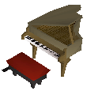
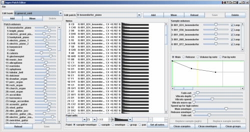

")
Audio Team - Music, Sound Effects and the Sound Bank

Audio Team - Music, Sound Effects and the Sound Bank
Now we've had a look at the visual side of things in the Graphics Development Diary, it's time to have a listen to the other side of asset production: audio development. Graphics are generally noticed first – when you log into the game, they're the first thing you experience – but although music and sound effects are more subtle, they play an equally important role in immersing you into a game. As the Greek philosopher Plato once said, "Music gives a soul to the universe, wings to the mind, flight to the imagination, and life to everything."
A prima vista
In comparison to our other development teams, the Audio team itself is small, currently only consisting of three people – Mod Ian, Mod Dan A and Mod Bond. Despite being a small team, they have a wide range of musical talents, tastes and backgrounds, and between them have composed over 500 RuneScape songs and hundreds of sound effects.
Mod Ian, the team leader, started out working on our Customer Support team, then switched to working fifty-fifty between Audio and RuneScape Content (the Dig Site quest was one of his) before moving over to Audio full-time. "When I started, I basically just had to write lots of songs. Now I run the team," he says.
Mod Dan A has been playing guitar for about twenty years, playing keyboard and composing electronic music for fifteen, and has been a member of a prog rock band for eight years or so. Mod Bond started playing the piano and composing aged five, and has also played the violin in several orchestras. Both of them have degrees in Music Technology.

A piano.
"Although physically we're separated from the rest of the company," says Mod Bond, referring to the soundproof area in which they work, "in spirit and in practise, we're very much an integral part of the development process and of the complete RuneScape experience."
As with the Graphics team, the Audio team get involved in the development process very early. During a project's briefing stages, there is a planning meeting where the audio requirements are discussed – how many songs and sound effects, the feel and tone needed, etc. "The music is usually then created when an area's 3D models are complete, and the sound effects when the animation is finished," says Mod Ian.
And the beat goes on
Mod Bond says, "The inspiration for songs and effects largely comes from seeing the areas and animations themselves, once Graphics have modelled them." The audio brief from the content developer also contributes, though it's impact varies. "Some developers are very specific about what they want, referencing certain themes, while others give us free reign to do whatever we feel is appropriate – both situations have their advantages," Mod Bond continues.
"Saxophones have a cheeky, raspy noise that reflects the goblins they represent."
 Mod Bond
Mod Bond
Audio
The Audio team also sometimes reuses themes – for instance, over the course of a long or multi-part quest, or attached to specific NPCs. The character of Zanik has her own theme, which has influenced some of the music from those quests she features in, to help reinforce the story. It's a well-known fact that music and memory are closely linked. "Over time, we've established various instruments used to reflect certain RuneScape races – for example, saxophones have a cheeky, raspy noise that reflects the goblins they represent," says Mod Bond.
Once an audio developer has an idea of what they want to compose, it's over to the actual production. "We use a commercial MIDI-sequencing program that allows us to record a sixteen-track song, which we hand-write using a MIDI keyboard controller," says Mod Ian. For those that don't know, MIDI (Musical Instrument Digital Interface) is an industry-standard protocol for instruments and computers to communicate with each other.

A snare drum sound being prepared in the loop editor.
The Audio team also uses in-house software for other parts of the process, which aids them in keeping file sizes low. Mod Dan A explains: "The loop editor is for taking the original, full quality sound samples and creating small, compressed loops from them. These loops are then passed into a patch editor, which allows us to arrange these loops onto our MIDI keyboards to play as an instrument, to compose the songs how we want." The last piece of software the Audio team uses, also in-house software, is used to create all of the game's sound effects. "The tools we use were developed for us specially by Mod Ben D with Andrew's assistance," says Mod Ian, "we are grateful for all the hard work they have put in to make these facilities available for us - thanks guys!"

A piano sound being used in the patch editor.
The sound bank
The samples used in these pieces of software come from something called a sound bank. A sound bank is simply a collection of sounds that follow a general MIDI standard, which can be used to construct a piece of music or a sound effect. As with Graphics and RuneScape Content, the Audio team also has its own set of improvement projects, one of which was creating our own Jagex sound bank – this resulted in having to rework and tweak the 500+ existing songs.
The Jagex sound bank is split up into an instrument bank of 128 instrument sounds (brass, wind, string, etc.) and 9 different drum kits (totalling 58 drums), and because it's our own custom sound bank we're able to add some unusual noises (e.g. the record scratch from the Grim Tales quest). Before the addition of our own sound bank, how a song sounded relied upon the sound banks used by the soundcards in each of your computers. Mod Dan A says, "One of the advantages is that, rather than each player hearing a bank of sounds generated by their soundcard, which might be different between each player, they now hear the Jagex sound bank, so the music will sound the same across all computers and Internet browsers." – this include Macs, which previously had no sound at all!
"The sound bank could actually be compressed to, pretty much, fit on a single 1.44Mb floppy disk."
Mod Bond
Audio
Now, every time a song or effect is played, the RuneScape game client dynamically downloads the sounds required to play it from the Jagex sound bank, so the Audio team has to make sure to keep file sizes as small as possible – "It's a major technical and creative challenge, working towards these tiny file sizes without creating a lot of audio noise. We have to use lots of hiding/masking and noise reduction techniques," says Mod Dan A. It is possible, though, as Mod Bond follows that up by saying, "The sound bank could actually be compressed to, pretty much, fit on a single 1.44Mb floppy disk."
Aside from the sound bank, the Audio team have worked on a number of other audio improvements – the area sounds (the wolf howls on White Wolf Mountain, birds twittering in the trees), syncing sound effects with animations (across several skills, e.g. chopping trees) – and the reasons for doing so reflect those behind the graphical and game improvements. Quite simply, as Mod Ian puts it, "As new facilities become available to us, we use them!"
Audio appreciation society
"While we realise that not everyone may be interested in audio updates, we as a company always have to bear in mind that it's a complete gaming experience that we want to offer, and that includes updates to every aspect of the game, whether that be graphics, storylines, sound effects or even the website," says Mod Ian.

The music notes for 'Armageddon', the main theme tune for the God Wars Dungeon
Click the following for a larger, printable version: bars 1 and 2, bars 3 and 4, bars 5 and 6, bars 7 and 8.
"Saying that, we aim to give players a high degree of control over the audio in the game, to cater to as many tastes as possible," says Mod Ian, "a good example of which is the option to turn music, area sounds and sound effects on and off separately, so if players want to listen to their own music but still hear sound effects, they can." On the flipside, he continues, "For as many players that turn the music off, there's the same amount that turn it on, and have the desire to 'green light' (unlock) all of the songs in the song list."
Audio in games is often overlooked, being a subtler part of the overall experience, but most gamers appreciate that music can aid in enveloping them within a game, adding atmosphere and depth. Also, sound effects can not only help give a game a greater sense of reality, they can also provide useful cues, often more effectively than graphics can – e.g. the sound when your Prayer points run out.
Music: response
Having such varied tastes in music, each member of the Audio team has their own favourite RuneScape songs. They have too many favourites to list them all, but here are a few.

Mod Ian, Mod Bond and Mod Dan A - hard at work in the soundproof music room.
Mod Ian: "My favourite themes are the Keldagrim dwarves and the troll areas – I like the more comical and fun songs. I also like Mod Dan A's 'Undead Dungeon' – it clearly shows his darker tastes."
Mod Dan A: "Yes, I like the darker songs in the game; dramatic stuff, fighting music, etc. – songs that make you feel like you're on an adventure. My favourites are Mod Ian's 'Aztec' and Mod Bond's 'Armadyl Alliance' (from the God Wars Dungeon)."
Mod Bond: "Yeah, I like the darker music too, such as Mod Dan A's 'Undead Dungeon', but also the more melancholy themes and ballads like Mod Ian's 'Harmony' – I really like my own 'Fe Fi Fo Fum' too (laughs). We also regularly check the forums for players' comments and are always interested in what their favourites are."

More articles in
Development Diaries
|
|